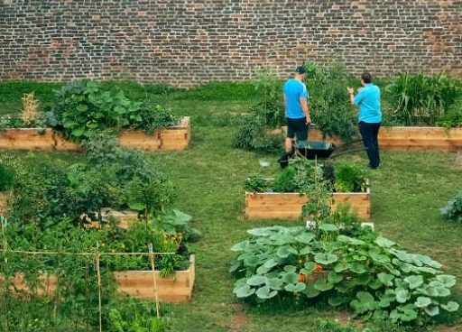
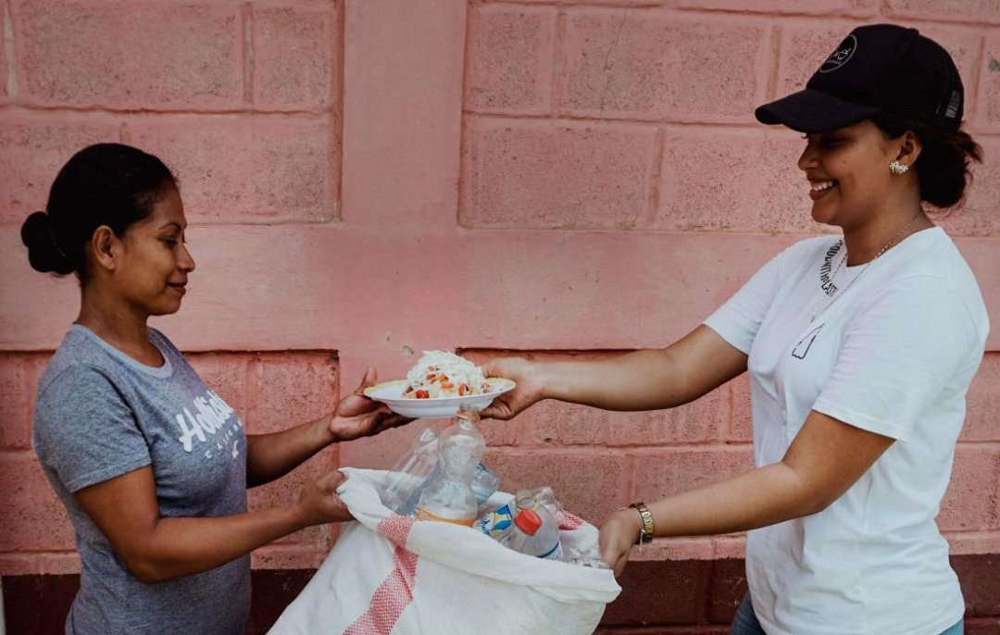

Free Airtime For Unheard Voices
Apply today to have your message heard by thousands for free. From local community messages by zip code all the way to regional radio coverage.
Airtime, On Us
The FRP empowers anyone to be heard by thousands through radio and audio streaming platforms like Spotify and Pandora, regardless of advertising budget.
- A mother who wants drivers to slow down near the elementary school can ask the whole town, in her own words.
- A food pantry with full shelves and too few visitors can tell every family nearby when the doors are open.
- A volunteer fire company that is short on members can recruit across its own zip codes without spending a dollar of its budget.
Broadcasting Powered By Good People

Our sponsors donate to the Free Radio Project each year so more local voices can be heard by thousands. Here's how it works:
Apply
Start by telling us who you help and what you'd like listeners to do. The form takes about five minutes.
Approve the script
We'll send you a draft within a few days. Change anything you like until it sounds like you wrote it.
We record it
Once you approve the script, we record the finished ad and send you a copy to keep.
It airs
Your ad plays to thousands of local listeners, or even on a national scale, and we report the results.

Empowering local voices with free airtime, powered by sponsors who care.
If the work helps people, it qualifies
Our free ads are for nonprofits, volunteer groups and community projects of every size. You don't need a budget, a marketing person or any experience with advertising to apply.
When you apply, you join our waiting list. Sponsors then choose the causes they want to put on the air, and one sponsorship can cover ten or more of them, so there is a good chance yours is picked soon.




Questions people ask first
If yours isn't here, send it through the contact form and we'll get back to you within two business days.

Is it really free?
Yes, all of it. You won't pay for the script, the recording or the airtime, because our sponsors cover the cost.
Who can get a free ad?
Nonprofits, volunteer groups and community projects are all welcome to apply. The only things we can't air are ads for or against political candidates and, for now, ads for businesses.
Where does the ad play?
It plays on streaming radio stations, music apps and podcasts, and we aim it at listeners in your area. Each ad runs for two to four weeks.
When can we get ours?
We air ads as sponsor funding comes in, and we work through applications in the order they arrive. Applying now holds your place in line.
Can we use the ad anywhere else?
Yes. The finished ad is yours to keep, and you're welcome to post it on your website and social pages.
Is a gift to you tax-deductible?
Not yet. We're being formed as a Pennsylvania nonprofit and will apply to the IRS for 501(c)(3) status, and we won't take any payments until that is in place.
Your Name Behind Every Sponsorship
Every free ad is paid for by a local sponsor, and listeners hear that sponsor thanked by name. We're looking for 25 founding sponsors to get the first ads on the air.
Fund a voice See sponsor levels